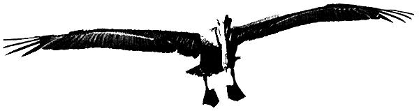

A SHORT MESSAGE ABOUT DDT..
...one brown pelican hatched in california this year.
L.A. FREE PRESS/$5.00/year/7813 Beverly Blvd./Los Angeles/Calif. 90036
When Tweedledum (the "free" capitalist world) and Tweedledee (the earnestly dreary communist world) had agreed to have a battle -
Just by then flew a monstrous crow
As black as a tar-barrel,
Which frightened both those heroes so
They quite forgot their quarrel.
Because today every political, international, ideological, and racial dispute is piffling and irrelevant beside the fact that human beings, with misapplied technology, are about to destroy their planet. Air and water, for example, cannot be divided by political boundaries; the rich must breathe the same air as the poor. We are, as the saying goes, all in the same boat-and the boat is sinking.
* The planet is dangerously overpopulated, and there will be a world-wide famine by 1975 unless food production is increased by 25%.
* Water is the most essential ingredient of life in shortest supply. We are wasting and contaminating it at top speed.
* The very existence of nuclear weapons and radioactive wastes presents the problem, not merely of avoiding atomic war, but of how to get these materials off the planet.
* Likewise, we have created, for military reasons, chemical and biological poisons whose mere presence, much less actual use, is a danger to all life on earth.
* We are increasingly being suffocated not only with the gases from burnt oil, but also under mountains of paper (involving also the disasters of deforestation) employed for recording life rather than living it, and so representing an insane confusion of reality with words. Thus, doctors and nurses must devote so much time to paperwork that they can hardly practice medicine.
* Human life depends on coexistence with a vast variety of animals, insects, plants and bacteria, many of which are in danger of extermination through industrial wastes and ill-conceived methods of hunting, pest-control, and commercial fishing.
THEREFORE:
The individual must acquire a new sensation of himself-not as a skin-bounded person threatened by the rest of the world-but as a localized action of the entire universe, inseparable from every other biological, geological, and astronomical process.
There must be a World Ecology Year in 1972 (at the very latest) to divert the attention of all nations and peoples from their trivial quarrels to the overwhelming and centrally important problem of man's relation to his physical environment.
Many bridges are being built toward this MUST by 1972, including:
The Swedish Delegation to the United Nations (825 Third Avenue, New York, N.Y.) which has already taken the preliminary steps for this action under the auspices of the U. N.
The Growth Centers of North America (some 90 independent organizations involved in the Human Potential-Humanistic movement) would like to invite a large number of ecologically concerned leaders in science, philosophy, sociology, and other disciplines to spend from 6 to 12 months in 1972 as guests of these Centers to conduct seminars and lectures to determine action on these problems.
Many other individuals and groups unknown to us are concerned with the ecological problem, and we invite them to get in touch with their nearest Growth Center, with the Swedish Delegation, or with the Esalen Institute, P.O. Box 31389, San Francisco, Calif. 94131.
This manifesto is issued at the request of the Growth Centers of North America, at a meeting held, in San Francisco in July 1969.
Richard Farson
Michael Murphy
Robert B. Shapiro
Alan Watts
No copyright. May be reproduced anywhere.
|
 |
|
|